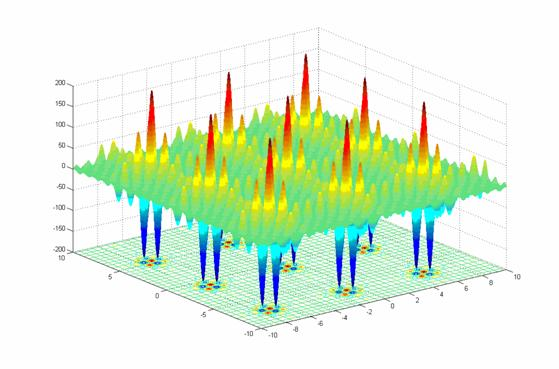

The Shubert Function

The Shubert function has multiple optima and is extensible to arbitrary dimensions.
In 2 dimensions, there are 18 global and 742 local optima in [-10,10]^2. The
global minima are clustered in 9 pairs, so that the resolution of a multimodal search
algorithm is critical for finding all of them.